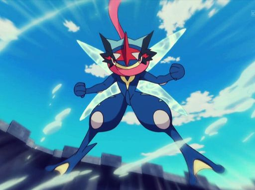
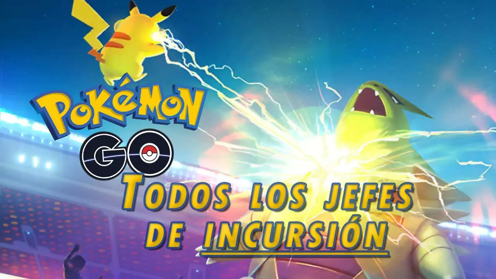

Home
Listas
Lista 1
Lista 2
Formulario
Pokemon Mas Popular Por La Comunidad
¡NUEVO MODO DE JUEGO!
#
Sprite
Nombre
Tipo 1
Tipo 2
Japonés
001
Bulbasaur
Planta
Veneno
フシギダネ
002
Ivysaur
Planta
Veneno
フシギソウ
003
Venusaur
Planta
Veneno
フシギバナ
004
Charmander
Fuego
ヒトカゲ
005
Charmeleon
Fuego
リザード
001
Bulbasaur
Planta
Veneno
フシギダネ
006
Charizard
Fuego
Volador
リザードン
007
Squirtle
Agua
ゼニガメ
008
Wartortle
Agua
カメール
009
Blastoise
Agua
カメックス
010
Caterpie
Bicho
キャタピー
011
Metapod
Bicho
トランセル
012
Butterfree
Bicho
Volador
バタフリー
013
Weedle
Bicho
Veneno
ビードル
014
Kakuna
Bicho
Veneno
コクーン
015
Beedrill
Bicho
Veneno
スピアー
016
Pidgey
Normal
Volador
ポッポ
017
Pidgeotto
Normal
Volador
ピジョン
018
Pidgeot
Normal
Volador
ピジョット
019
Rattata
Normal
コラッタ
020
Raticate
Normal
ラッタ
021
Spearow
Normal
Volador
オニスズメ
022
Fearow
Normal
Volador
オニドリル
023
Ekans
Veneno
アーボ
024
Arbok
Veneno
アーボック
025
Pikachu
Eléctrico
ピカチュウ
026
Raichu
Eléctrico
ライチュウ
027
Sandshrew
Tierra
サンド
028
Sandslash
Tierra
サンドパン
029
Nidoran♀
Veneno
ニドラン♀
030
Nidorina
Veneno
ニドリーナ
031
Nidoqueen
Veneno
Tierra
ニドクイン
032
Nidoran♂
Veneno
ニドラン♂
033
Nidorino
Veneno
ニドリーノ
034
Nidoking
Veneno
Tierra
ニドキング
035
Clefairy
Hada
2
ピッピ
036
Clefable
Hada
3
ピクシー
037
Vulpix
Fuego
ロコン
038
Ninetales
Fuego
キュウコン
039
Jigglypuff
Normal
Hada
4
プリン
040
Wigglytuff
Normal
Hada
5
プクリン
041
Zubat
Veneno
Volador
ズバット
042
Golbat
Veneno
Volador
ゴルバット
043
Oddish
Planta
Veneno
ナゾノクサ
044
Gloom
Planta
Veneno
クサイハナ
045
Vileplume
Planta
Veneno
ラフレシア
046
Paras
Bicho
Planta
パラス
047
Parasect
Bicho
Planta
パラセクト
048
Venonat
Bicho
Veneno
コンパン
049
Venomoth
Bicho
Veneno
モルフォン
050
Diglett
Tierra
ディグダ
051
Dugtrio
Tierra
ダグトリオ
052
Meowth
Normal
ニャース
053
Persian
Normal
ペルシアン
054
Psyduck
Agua
コダック
055
Golduck
Agua
ゴルダック